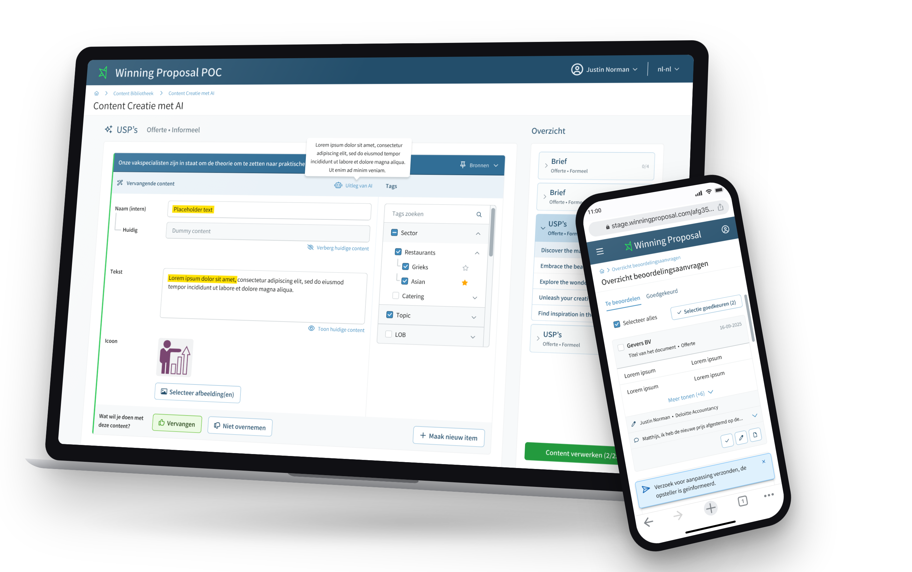

Winning Proposal B2B SaaSLead UX Designersinds 2024
Offertesoftware waarmee salesteams sneller een winnend voorstel maken, met hulp van AI
Geen afgebakende opdracht, maar doorlopend eigenaarschap: elke nieuwe stap van het platform geef ik vorm, van onderzoek tot livegang.
- Elke feature live
- 2 teams, 12 developers
- 15+ interviews